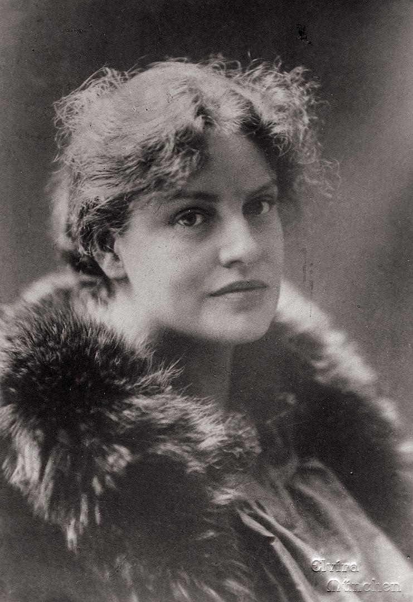

Lou Andreas-Salomé
Wieczorem 12 maja roku 1897 René Rilke został przedstawiony „dwu wspaniałym kobietom — jak relacjonował później swej matce — sławnej pisarce Lou Andreas-Salomé oraz podróżniczce po Afryce Friedzie von Bülow”. Obie panie dopiero co przybyły do Monachium, gdzie zamierzały spędzić kilka miesięcy, i zamieszkały w pensjonacie przy pobliskiej Schellingstraße.

Bez wątpienia René pragnął w swym liście wywrzeć na matce wrażenie, albowiem słowo osławiona miast sławna lepiej opisywałoby Lou Andreas-Salomé w tamtym okresie. Piętnaście lat wcześniej Lou była autorką głośnego skandalu, kiedy to odrzuciła starania Nietzschego o jej rękę, po czym kilka miesięcy spędziła wspólnie z nim oraz Paulem Rée, tworząc swego rodzaju ménage à trois. Ów związek wzbudził sensację i przyniósł jej większy rozgłos aniżeli książki o Nietzschem i Ibsenie oraz trzy powieści.
Louise von Salomé urodziła się w roku 1861 w St. Petersburgu jako córka rosyjskiego generała, wywodzącego się z rodziny hugenockiej, oraz matki Niemki. Dość wcześnie dała się poznać jako osoba inteligentna i spragniona wiedzy. Po śmierci ojca podróżowała z matką po całej Europie; jako studentka teologii i filozofii w Zurychu była jedną z pierwszych kobiet, które podjęły studia uniwersyteckie, wywierając tym olbrzymie wrażenie w kołach intelektualnych, szczególnie w Rzymie w kręgu Malwidy von Meysenbug. Urzekała swą niepospolitą urodą; jako osoba całkowicie wyemancypowana gardziła wszelkimi konwenansami, korzystała ze swobody, podróżując dokąd i kiedy tylko miała ochotę, zagłębiając się w studia i oddając pisaniu. W Monachium, dzięki swej nieprzeciętnej osobowości, od razu skupiła na sobie uwagę. Spotykała się z Maxem Halbe i Frankiem Wedekindem, których poznała już wcześniej w Berlinie, szybko też zawiązywała nowe przyjaźnie — z Jakobem Wassermannem, Eduardem księciem von Keyserling, Michaelem Georgiem Conradem oraz młodym architektem Augustem Endellem.

René Rilke od razu uległ jej urokowi. Musiał podziwiać ją już od dawna, gdyż Lou — jak wspominała po latach — otrzymywała od pewnego nieznajomego listy z wierszami, pisane tą samą ręką, co i list, jaki przysłał jej René po ich pierwszym spotkaniu. Sytuacja ta nie była dla Lou w żadnym razie niezwykła; mimo to nawet ona nie zdołała oprzeć się uporczywości, z jaką René w nadchodzących tygodniach będzie zabiegać o jej względy. Następny wieczór Rilke spędził w teatrze w towarzystwie Lou, Endella oraz sióstr Goudstikker. Po przedstawieniu wszyscy udali się w wesołych nastrojach do restauracji Schleicha na kolację, która przeciągnęła się do pół do drugiej w nocy, po czym René wraz z Endellem odprowadzili Lou do domu. Trzy dni później, przed kolejną wizytą w teatrze — tym razem w towarzystwie Friedy von Bülow — René spotkał się z Lou sam na sam i przeczytał jej kilka Wizji Chrystusowych. Podarował jej również egzemplarz tomiku Uwieńczony marzeniem z wierszowaną dedykacją. Często zasiadali w pensjonacie do wspólnej kolacji; poeta pokazał jej także rękopisy swych jednoaktówek. Kiedy nie mógł się z nią zobaczyć, był niepocieszony: „Włóczyłem się z paru gałązkami róż w ręce po mieście, długo czatowałem u bramy Ogrodu Angielskiego, bo chciałem je Pani podarować. Ale zamiast złożyć je u progu wraz ze złotym kluczykiem, nosiłem je wszędzie ze sobą, drżąc z żarliwego pragnienia, by Panią gdzieś napotkać”.
Dla Lou, kiedy po latach powracała myślą do tego okresu, René był „pierwszą najprawdziwszą rzeczywistością, jednością ciała i człowieczeństwa… Słowo w słowo mogłam Ci wyznać to samo, coś Ty wyznał mi mową miłości: ty jedna jesteś rzeczywista. Byliśmy małżonkami, zanim jeszcze staliśmy się przyjaciółmi”. Jakkolwiek Lou była starsza od niego i pod wieloma względami dojrzalsza, niemniej takiego uczucia doznała po raz pierwszy w życiu. Od początku jednak zdawała sobie sprawę, że ich związek nie może przetrwać, ba, nie wolno jej było go podtrzymywać. Jakiś wewnętrzny nakaz nie pozwalał jej zerwać małżeństwa z Friedrichem Andreasem. Talent René oceniała z absolutną bezstronnością, a w swych intelektualnych kontaktach z artystą z pewnością odczuwała także jakoweś matczyne pragnienie, by dopomóc mu na drodze do pełnego rozwoju sił twórczych. Podziwiała w nim jedność intelektu i zmysłów oraz radosną otwartość na wszystko, co życie może przynieść.
Cytowane fragmenty zaczerpnięto z biografii poety Dźwięczące szkło pióra Donalda Pratera.
O historii związku Rainera Marii Rilkego i Lou Andreas-Salomé opowiada również artykuł Rilke i Lou.